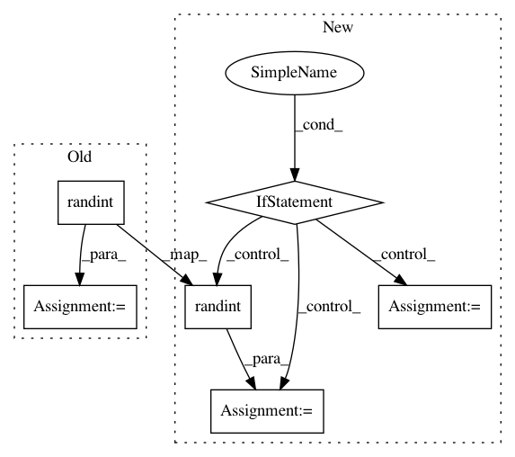

77b5596d0a032e2a3738a58c74832fa6fb6500e2,lib/pairwise_transform.py,,_noise,#Any#Any#Any#,11
Before Change
quality0 = random.randint(85, 100)
quality1 = random.randint(65, 90)
quality2 = random.randint(45, 70)
quality3 = random.randint(25, 50)
if np.random.uniform() < chroma:
// YUV 420
sampling_factor = "2x2,1x1,1x1"
if level == 0:
After Change
elif level == 2 or level == 3:
// for level 3, --nr_rate 1
rand = np.random.uniform()
if rand < 0.6:
quality = random.randint(25, 70)
dst = iproc.jpeg(src, sampling_factor, quality)
elif rand < 0.9:
quality0 = random.randint(35, 70)
quality1 = random.randint(25, 65)
dst = iproc.jpeg(src, sampling_factor, quality0)
dst = iproc.jpeg(dst, sampling_factor, quality1)
else:
quality0 = random.randint(50, 70)
quality1 = random.randint(35, 65)
quality2 = random.randint(25, 55)
dst = iproc.jpeg(src, sampling_factor, quality0)
dst = iproc.jpeg(dst, sampling_factor, quality1)
dst = iproc.jpeg(dst, sampling_factor, quality2)
return dst
def noise(src, rate, level, chroma):
In pattern: SUPERPATTERN
Frequency: 3
Non-data size: 6
Instances
Project Name: tsurumeso/waifu2x-chainer
Commit Name: 77b5596d0a032e2a3738a58c74832fa6fb6500e2
Time: 2017-02-28
Author: nstm101339@gmail.com
File Name: lib/pairwise_transform.py
Class Name:
Method Name: _noise
Project Name: sassoftware/python-dlpy
Commit Name: 5afebdc66e708e63b0a4ae7868325252e14e14e9
Time: 2019-11-13
Author: docair@dlgrd010.unx.sas.com
File Name: dlpy/transformers/bert_utils.py
Class Name:
Method Name: display_obs
Project Name: sony/nnabla
Commit Name: 61d6d0296c2df2610fada6d67cece3e6a7b90828
Time: 2019-02-18
Author: Takuya.Yashima@sony.com
File Name: python/test/function/test_one_hot.py
Class Name:
Method Name: test_one_hot_forward